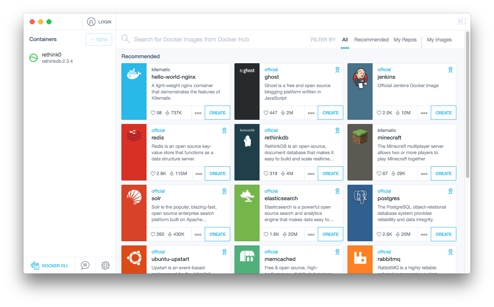
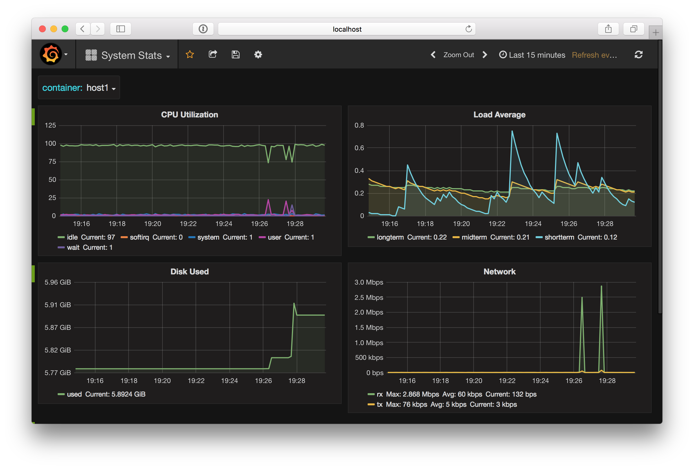

Getting Started with Docker

whoami
- Andy Tolbert
- Software Engineer @ DataStax
- @tolbertam
- Docker noob
What is Docker?
Containers, Eh?
Virtualization method for running a number of sandboxed environments using a single kernel
Containers are: Lightweight
- A virtual machine contains an entire OS environment
- Containers have just the application you are trying to provide and its dependencies


Containers are: Isolated
Containers isolate system resources using linux features.
- cgroups hardware (cpu, memory, networking, etc.)
- namespaces os (PID, hostname, userid, fs, etc.)
libcontainer used to interface with this functionality and other facilities.
Containers are: Fast
- Starting a container is virtually as fast as starting a process
- Building a container is fast because it just contains your application
- Stopping a container is fast because you are just killing process(es)
Containers are: Disposable
- Can be single purpose: 'Run this command and exit'
- External volumes can be shared: 'Run this database, store data in /mnt/data0'
Containers are: Simple
- Limited Scope:
- What needs to be installed? How do I install it?
- How do I run my application?
- What ports do I expose?
- Separation of concerns: 'So easy a developer can do it!'
Docker History
- 2008: First release of lxc
- Jan 2013: Started as a side project @ dotCloud
- Jul 2013: Open Sourced
- Oct 2013: dotCloud reincorporated as Docker, Inc.
- Jun 2014: 1.0 release
- Jun 2015: Open Container Initiative created
- Apr 2016: 1.11 release, first based on OCI tech
Docker is: Awesome
The community agrees
- 26th most popular project on GitHub (19180 🌟)
- So successful caused company to pivot (dotCloud => Docker, Inc).
- Most Cloud Providers integrate with it (AWS, GCE, Azure, etc.)
Getting Docker
Docker for Linux
- Packages available for most Linux platforms
- Build from Source
Docker for Mac
Docker for Windows
- Uses Microsoft Hyper-V
- Requires Windows 8. Docker Toolbox can be used on older verisons of Windows
Docker CLI
- Docker runs the hypervisor in a backround daemon
- The docker command is used to interact with docker
Usage: docker [OPTIONS] COMMAND [arg...]
docker [ --help | -v | --version ]
...
Commands:
build Build an image from a Dockerfile
create Create a new container
exec Run a command in a running container
images List images
logs Fetch the logs of a container
ps List containers
pull Pull an image or a repository from a registry
rm Remove one or more containers
run Run a command in a new container
start Start one or more stopped containers
stop Stop one or more running containers
... and more ...
Kitematic
Docker Hub
Demo: Running a Grafana Container
Docker Run
$ docker run -d -p 8125:8125/udp -p 8126:8126 -p 3000:80 --name grafana kamon/grafana_graphite
Unable to find image 'kamon/grafana_graphite:latest' locally
latest: Pulling from kamon/grafana_graphite
71a21fdea81d: Pull complete
cf68a3ea6e1d: Pull complete
31cb2a4d344a: Pull complete
0341b6fcb0fe: Pull complete
...
eac652639fe7: Pull complete
a759dc349f21: Pull complete
14bc97cfee28: Pull complete
4c29088bbc9f: Pull complete
Digest: sha256:8b75a8bd5f3215248f6d6e84ddacb84c3e343f1d2cc2dcd0b820f9b12cb6a44f
Status: Downloaded newer image for kamon/grafana_graphite:latest
fb4462223ae22d6744a7b49914261a3735eb45d0061e4d21d2ea941de3dbe13b
Up and Running!
- Navigate to http://localhost:3000
- Authenticate with admin/admin credentials
- Add a datasource for http://localhost:8000
Demo: Feeding Stats from Another Container
Running a Conatiner with Collectd
docker run -e HOST_NAME=host0 \
-e GRAPHITE_HOST=$(docker inspect --format '{{ .NetworkSettings.IPAddress }}' grafana) \
-e GRAPHITE_PORT=2003 \
-e COLLECT_INTERVAL=1 \
-d --name host0 andreasjansson/collectd-write-graphite
latest: Pulling from andreasjansson/collectd-write-graphite
8a2df099fc1a: Pull complete
09aa8e119200: Pull complete
...
5f9d5749cc76: Pull complete
fbc5e6650f83: Pull complete
Digest: sha256:c8bee49fcd8f0e4428d4c56e8f40f19c34d6b2c0e297a65ad0a27e6f512b0b7c
Status: Downloaded newer image for andreasjansson/collectd-write-graphite:latest
47202ad215d78611b13285e41bc4c92271d306dce94791599b0a884c8e4dfc4b
Launching 10 more containers
#!/bin/bash
for i in {1..10}; do
HOST=host${i}
echo "Starting $HOST"
docker run -e HOST_NAME=$HOST \
-e GRAPHITE_HOST=$(docker inspect --format '{{ .NetworkSettings.IPAddress }}' grafana) \
-e GRAPHITE_PORT=2003 \
-e COLLECT_INTERVAL=1 \
-d --name $HOST andreasjansson/collectd-write-graphite
done
Visualizing Container Stats on Dashboard
Demo: Publishing this Presentation to Docker Hub
Creating a Dockerfile
FROM node:6.6
RUN git clone --branch 3.3.0 https://github.com/hakimel/reveal.js.git
RUN cd reveal.js && npm install
RUN npm install -g grunt-cli
ADD index.html /reveal.js/index.html
ADD dockerpres.css /reveal.js/css/theme/dockerpres.css
ADD solarized-light.css /reveal.js/lib/css/solarized-light.css
ADD static /reveal.js/static
WORKDIR /reveal.js/
ENTRYPOINT ["grunt", "serve"]
EXPOSE 8000
Building the Image
$ docker build -t tolbertam/docker-getting-started-presentation .
Sending build context to Docker daemon 805.9 kB
Step 1 : FROM node:6.6
---> c0d8845263e3
Step 2 : RUN git clone --branch 3.3.0 https://github.com/hakimel/reveal.js.git
---> Using cache
---> 60802f9547ef
Step 3 : RUN cd reveal.js && npm install
---> Using cache
---> f6a9eae37e1f
Step 4 : RUN npm install -g grunt-cli
---> Using cache
---> 46a8c04a8146
Step 5 : ADD index.html /reveal.js/index.html
---> 8aacc8761bb0
Removing intermediate container 330ffea1fbcf
Step 6 : ADD dockerpres.css /reveal.js/css/theme/dockerpres.css
---> 4e2dc89fe63d
Removing intermediate container 4bca44fa8856
Step 7 : ADD solarized-light.css /reveal.js/lib/css/solarized-light.css
---> 13507f3e22b1
Removing intermediate container 4b92da1e1f68
Step 8 : ADD static /reveal.js/static
---> e54b1d802e26
Removing intermediate container 532570ab7b76
Step 9 : WORKDIR /reveal.js/
---> Running in 50d3b1cadaa4
---> c55fecdca0b2
Removing intermediate container 50d3b1cadaa4
Step 10 : ENTRYPOINT grunt serve
---> Running in 4209c7bf8d72
---> a331c0d01be1
Removing intermediate container 4209c7bf8d72
Step 11 : EXPOSE 8000
---> Running in 3220021949f8
---> ae0dd733a5fb
Removing intermediate container 3220021949f8
Successfully built ae0dd733a5fb
Pushing to Docker Hub
$ docker login
Login with your Docker ID to push and pull images from Docker Hub.
Username: tolbertam
Password:
Login Succeeded
$ docker push tolbertam/docker-getting-started-presentation
The push refers to a repository [docker.io/tolbertam/docker-getting-started-presentation]
b316997c81ff: Pushed
5138d358f948: Pushed
8eef5f3b080d: Pushed
5613b909b0ab: Pushed
ef4f7f3517c4: Pushed
042651f42e23: Pushed
af4319d9d3e3: Pushed
latest: digest: sha256:b347ea4d52d25e5bc59d9aee052d65d5763dd3fe8b4a76dce84318acb66bebaf size: 3053
Demo: Deploying your Container in Google Container Engine
Using Google Cloud Shell
$ gcloud container clusters create docker-cluster
Creating cluster docker-cluster...done.
Created [https://container.googleapis.com/v1/projects/fast-metric-127414/zones/us-central1-b/clust
ers/docker-cluster].
kubeconfig entry generated for docker-cluster.
NAME ZONE MASTER_VERSION MASTER_IP MACHINE_TYPE NODE_VERSION NUM_NODE
S STATUS
docker-cluster us-central1-b 1.3.7 104.197.3.17 n1-standard-1 1.3.7 3
RUNNING
$ kubectl run pres --image=tolbertam/docker-getting-started-presentation:latest --port=8000
$ kubectl expose deployment pres --type="LoadBalancer"
service "pres" exposed
$ kubectl get service
NAME CLUSTER-IP EXTERNAL-IP PORT(S) AGE
pres 10.3.255.8 104.155.188.118 8000/TCP 1m